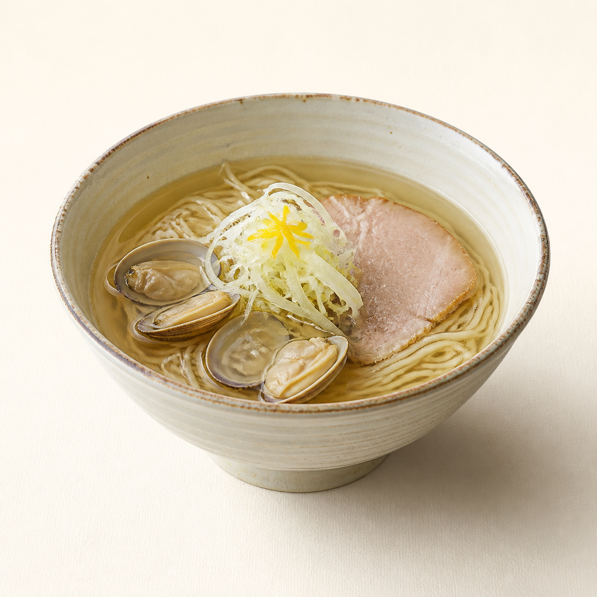
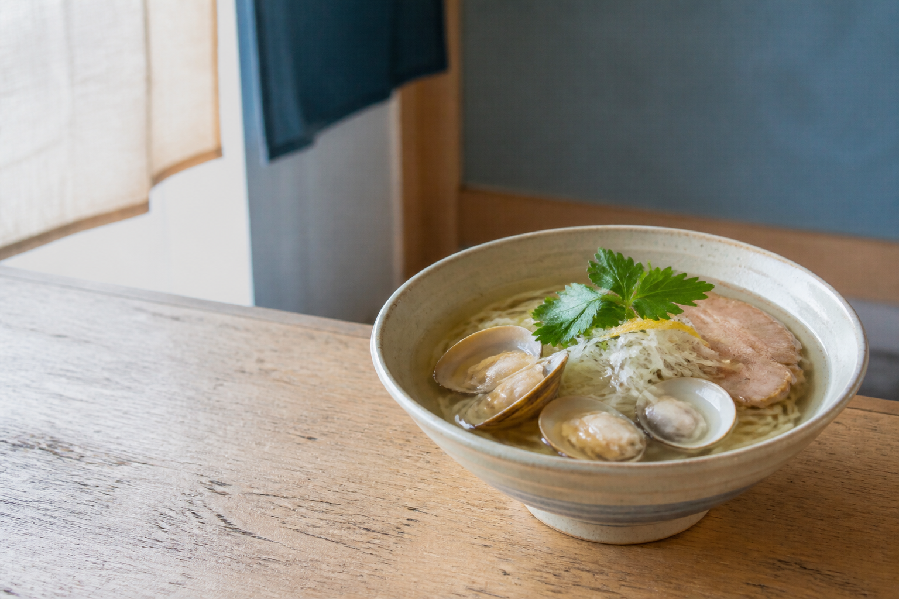
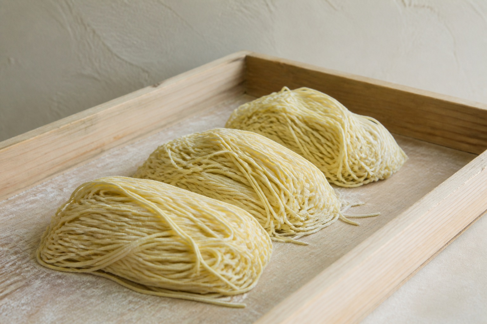

あさり塩
澄んだ旨みと、柚子の香り。

ゆっくり炊いて、すっきり仕上げる。
私たちのこと 01
うみの音は、海の素材をていねいに扱う小さなラーメン工房。強い味を足すのではなく、素材ごとの旨みがきれいに重なる順番を探しました。
飲み干したあとに、ほんのり残る貝の香り。そんな一杯を目指しています。
お品書き 02
だしのこと 03
昆布は低い温度でじっくり。えびは香味油へ。あさりは仕上げに重ねる。それぞれの得意なところだけを引き出します。
麺のこと 04

つるりとした口当たりと、ほどよい歯切れ。だしをまといやすい細さに整え、すすった瞬間の香りまで設計しました。
おいしい作り方 05
柚子皮、白ねぎ、半熟たまごもよく合います。
お取り寄せ 06
三つの味を2食ずつ詰めた、はじめての方にうれしい食べ比べセットです。
よくあるご質問 07
基本の三商品に強い辛みはありません。お好みで七味やラー油を加えてください。
架空商品ですが、設計上は製造から常温で6か月を想定しています。
季節の掛け紙を選べる想定です。デモのため実注文には対応していません。